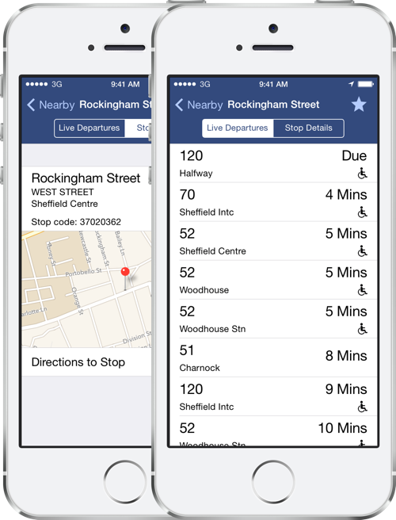
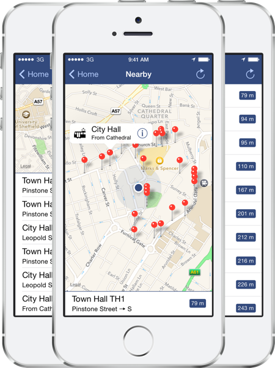

Packed with amazing features
With Transported finding your next bus or tram
has never been so simple.

Live departure times
Easily see what services are departing within the next hour, accurate to the nearest minutes, live from South Yorkshire Passenger Transport Executive.
Over 8000 stops built in
A fully searchable database of stops for South Yorkshire, including both buses and trams on all major networks.
Find nearby stops
Easily find stops nearest to your current location and see how far away they are.
Directions
Get accurate walking or driving directions to a stop using Apple Maps.
